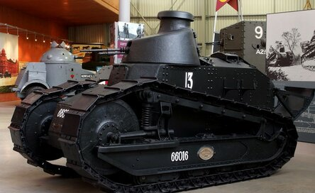

История создания танков
Для прорыва полевых укреплений колесные броневики были недостаточно вездеходными. Они уверенно двигались только по твердому грунту. В рыхлую землю, снег или грязь узкие колеса проваливались, техника застревала. Воронки, канавы и окопы, заборы и валы тогдашние колесные машины также не могли преодолевать. Это заставило конструкторов разрабатывать бронетехнику на гусеничном ходу.
«Маленький Вилли»Первые танки
В 1914–1915 гг. в России, Англии и Франции было предложено несколько проектов гусеничных «бронетракторов», «вездеходов» и «сухопутных крейсеров», но большинство не пошло дальше чертежей и опытных образцов. Самым удачным стал «Маленький Вилли», созданный в 1915 г. англичанами У. Триттоном и У. Вильсоном, взявшими за основу схему гусеничного движителя трактора «Холт». В серию машина не пошла – короткая гусеница не позволяла преодолевать широкие рвы и заборы. У следующей модели – «Большого Вилли» проходимость улучшили, изменив устройство гусеничного движителя.
Корпус сделали ромбовидным, установив гусеницу в обхват борта. При преодолении рвов и стенок передняя выступающая грань «ромба» нависала над ними, а затем наползала на препятствие сверху. Из-за такой конструкции машина получилась высокой. У оружейной башни на крыше была большая «мертвая зона», поэтому оружие установили в спонсонах – поворотных выступах на бортах. «Большой Вилли» поступил в армию под названием Mk I (сокр. «Mark I» – «первая модель») с двумя вариантами вооружения в спонсонах: «самец» с 6-фунтовыми орудиями и «самка» с пулеметами. В 1916 г. первые Mk I вступили в бой. Из 48 машин лишь 16 добрались до немецких позиций, не сломавшись, но им удалось прорвать оборону. Успех побудил увеличить выпуск новых машин. В ходе войны появилось еще 7 модификаций «ромба», последовательно получивших маркировку от Mk II до Mk VIII. На них устранили недоработки, усилили двигатель, вооружение и броню, улучшили управление.
Mark I («Большой Вилли») «самец»Французы начали разрабатывать «сухопутные броненосцы» (по аналогии с кораблями-броненосцами) одновременно с англичанами, взяв за основу тот же «Холт». Но французские танки «Шнейдер» и «Сен-Шамон» вступили в бой лишь в 1917 г. Форму гусеницы французы изменять не стали, поэтому проходимость их машин была ниже, чем у Mk I. Зато гусеница находилась под корпусом, который ее защищал. «Изюминкой» французских танков была электрическая трансмиссия (система передачи энергии двигателя к движителю – гусеницам), позволявшая управлять машиной одному водителю. У британского Mk I на каждую гусеницу приходилась отдельная коробка передач, и с управлением им еле-еле справлялись 4 человека (водитель, два помощника на коробках передач, командир на тормозах гусениц).
В «Шнейдере» и «Сен-Шамоне» бензиновый двигатель крутил генератор, и ток поступал к электромоторам, вращавшим гусеницы. Водитель регулировал подачу тока на моторы, изменяя направление и скорость вращения гусениц, тем самым заставляя танк поворачивать в движении и даже разворачиваться на месте. «Шнейдер» и «Сен-Шамон» получились настолько легко управляемыми, что орудие можно было наводить по горизонтали поворотом машины. Это позволило отказаться от хрупких конструкций спонсонов или башен и установить более мощное орудие прямо в лобовой броне. Машины такой компоновки позже стали называть самоходными артиллерийскими установками (САУ).
«Сен-Шамон»Танк «Шнейдер» с экипажем. Франция. 1918 г.
Для управления танками первого поколения и стрельбы из их пушек и пулеметов требовался экипаж из 8–12 человек. Машины, вмещающие такое количество людей, выходили громоздкими и тяжелыми. Они ползали по полю боя со скоростью пешехода, не поспевая за бегущей в атаку пехотой и становясь легкой мишенью для орудий противника. Более мощные двигатели не решали проблемы – массивные и тяжелые, они только увеличивали размер и вес машин. Инженеры искали иные решения.
Оригинальный выход из конструктивного тупика, в котором оказались танки, предложили французы Л. Рено и Э. Эстиен, создатели «Рено FT-17» – первого легкого танка. «Рено FT-17» был настолько прост в управлении, что с ним справлялись всего 2 человека: водитель и командир-стрелок. Большой корпус стал не нужен, и FT-17 в 5 раз более легкий, чем Mk V, даже с простеньким массовым автомобильным двигателем развивал вдвое большую, чем он, скорость.
Первый немецкий танк A7VРено и Эстиен применили ряд решений, позже ставших классическими. Гусеницу вместо ромбовидной сделали треугольной – поднятой вверх только спереди. При этом благодаря оригинальной системе амортизирующих рессор проходимость осталась высокой. Низкий корпус позволил установить оружие не по бортам, а во вращающейся башне сверху, не теряя возможности обстрела ближних подступов. Варианты вооружения были разными – 8-мм «Гочкис» у «самки», 37-мм орудие у «самца» или 76-мм гаубица у машины огневой поддержки.
Маленькие и быстрые FT-17 поспевали не только за пехотой, но и за кавалерией, вместе с которой могли, прорвав оборону, совершить рейд в тылу врага. До конца войны союзники «наклепали» около 3100 простых и дешевых FT-17, а всего в разных странах их выпустили около 8000.
 Французский легкий танк Рено FT-17 («самец»)Российская промышленность периода Первой мировой войны не могла наладить выпуск танков. В стране не производилось компактных и мощных двигателей, заводов тоже не хватало. В то же время даже применение закупленных у англичан танков было осложнено слабым развитием сети железных дорог в России. Медленные и часто ломавшиеся машины приходилось везти к месту применения на поездах, и на многие участки огромного русского фронта их просто невозможно было доставить.
Более полезной на русском бездорожье оказалась техника с полугусеничным движителем, изобретенным личным водителем Николая II, французом А. Кегрессом. Еще в 1906–1914 гг. конструктор опробовал свою схему на ряде машин, включая личный «Мерседес» императора. Заднюю – ведущую пару колес конструктор заменил резиновыми гусеницами, получив хорошее сцепление и тягу на мягком грунте. Передняя ось осталась колесной. Это позволило использовать обычное рулевое управление вместо технически сложного метода поворота за счет изменения скорости вращения гусениц.
Английский средний танк Mk А «Уайппет» («Whippet»)Автомобили на шасси Кегресса хорошо показали себя на фронте. Когда в 1916 г. в Россию из Англии стали поступать броневики «Остин» на базе одноименного грузовика, часть из них переделали в полугусеничные. Так в Русской армии появился «Остин-Кегресс» – более скоростной, простой и дешевый, чем танки. Благодаря дополнительным опорным каткам, выступавшим спереди и сзади колес и гусениц, он мог потягаться с танками и в проходимости. Но, к сожалению, таких броневиков до конца войны построили немного.
Русский полугусеничный броневик «Остин-Кегресс»Немецкий легкий танк LK-I